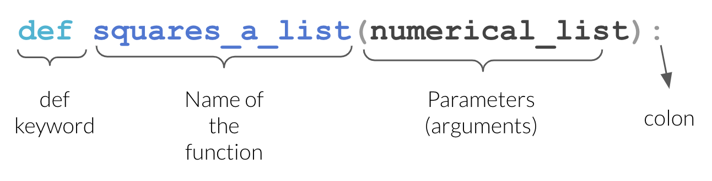
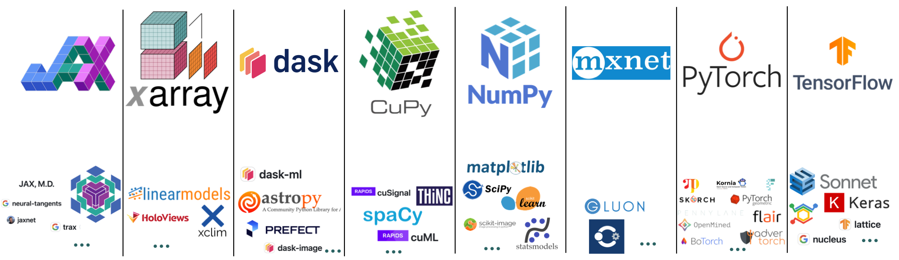

53.5 28.91Lecture 5: Functions, Modules and Packages
BAA1118 - Foundations of Programming for Analytics & AI
Damien Dupré
For Today
Requirements
- ✅ Conditions and loops
- ✅ Building a list inside a loop
- ✅ Assessment 1 submitted
Programme
- Why functions
- Defining a function
- Arguments and scope
- Modules and packages
- Paths, and getting data into Colab
- Reading documentation
Any questions?
Where We Are
You can now:
- Store data in lists and dictionaries
- Decide with
if - Repeat with
for
That is a complete programming language. Everything from here is about not writing the same thing twice.
1. Why Functions
The Copy-Paste Problem
Two nearly identical blocks. Now the VAT rate changes to 24%. How many places do you edit? How many do you forget?
Functions You Already Use
- You give inputs in the brackets: the arguments
- You get an output back: the return value
- You have no idea how
sum()is written internally, and you do not need to
Writing your own is the same idea, applied to your problem.
The Three Reasons
- Do not repeat yourself. One definition, one place to fix.
- Name your intention.
compute_gross(net)says what the four lines inside actually mean. - Test once. If the function is right, every use of it is right.
2. Defining a Function
def
defstarts the definitionadd_vatis the name, insnake_casenetis the parameter: a name that exists inside the function- Colon, then an indented block
returnsends a value back to the caller
Defining a function runs nothing. It only creates the tool.
The def Line

Source: UBC Master of Data Science, Programming in Python for Data Science
Calling a Function
The value in the brackets is the argument. It is copied into the parameter net for the duration of the call.
return vs print
This is the most common beginner confusion.
print shows a human. return gives a value back to the program. Analysis functions return.
return Ends the Function
Premium
StandardThe moment a return runs, the function stops. No else is needed here.
Docstrings
The first string inside a function documents it.
Help on function add_vat in module __main__:
add_vat(net, rate=0.23)
Return the gross amount for a net amount and a VAT rate.
net: the amount before VAT, in euros
rate: the VAT rate as a decimal, 0.23 by default
Three lines of docstring now save you an hour in March.
Your Turn: Your First Functions
- Write
celsius_to_fahrenheit(c)returningc * 9/5 + 32. Test it on 0 and 100. - Write
margin(revenue, cost)returning the profit margin as a percentage, rounded to 1 decimal. - Write
grade(mark)returning the DCU grade from lecture 4, as a function this time. - Give each one a one-line docstring.
Solution
def celsius_to_fahrenheit(c):
"""Convert a temperature from Celsius to Fahrenheit."""
return c * 9/5 + 32
def margin(revenue, cost):
"""Return the profit margin as a percentage, to 1 decimal."""
return round((revenue - cost) / revenue * 100, 1)
def grade(mark):
"""Return the DCU grade band for a mark out of 100."""
if mark >= 70:
return "First"
elif mark >= 60:
return "2H1"
elif mark >= 50:
return "2H2"
elif mark >= 40:
return "Pass"
return "Fail"
print(celsius_to_fahrenheit(100), margin(1000, 620), grade(64))212.0 38.0 2H13. Arguments and Scope
Several Parameters
3500.0Arguments are matched by position, in order. Get the order wrong and you get a wrong answer with no error:
Keyword Arguments
Name the arguments and position stops mattering:
3500.0
3500.0Tip
Use keywords whenever a function takes more than two arguments. Your future self reading net_profit(10000, 6000, 0.125) will not remember which is which.
Default Values
123.0
113.5
109.00000000000001- Parameters with defaults are optional
- They must come after the parameters without defaults
- This is how
round(x)andround(x, 2)can both work
Scope
Names created inside a function only exist inside it.
84--------------------------------------------------------------------------- NameError Traceback (most recent call last) Cell In[16], line 6 3 return hidden * 2 5 print(compute()) ----> 6 print(hidden) NameError: name 'hidden' is not defined
This is a feature: a function cannot silently break the rest of your notebook.
Scope, The Other Direction
A function can read names from outside:
123.0Warning
This works, and it is a trap. The function now depends on something invisible in its own definition. Change vat_rate elsewhere and the function quietly changes behaviour. Pass what you need as a parameter.
Functions Calling Functions
def add_vat(net, rate=0.23):
return net * (1 + rate)
def invoice_total(prices, rate=0.23):
"""Return the gross total of a list of net prices."""
total = 0
for price in prices:
total += add_vat(price, rate)
return round(total, 2)
print(invoice_total([10.0, 25.0, 8.5]))
print(invoice_total([10.0, 25.0, 8.5], rate=0.09))53.5
47.42Small functions combined beat one large one, every time.
Returning Several Values
4 563 140.8Python returns a tuple, which you unpack exactly as in lecture 3.
Your Turn: A Reusable Summary
- Write
summarise(values)returning the minimum, maximum, mean and range of a list. Do not usestatistics. - Unpack the four values and print them with an f-string, mean to 2 decimals.
- Write
clean_text(text)that strips spaces, lowercases, and replaces any"-"with a space. - Test
clean_texton" Dublin-City ".
Solution
def summarise(values):
"""Return min, max, mean and range of a list of numbers."""
lo = min(values)
hi = max(values)
mean = sum(values) / len(values)
return lo, hi, mean, hi - lo
lo, hi, mean, spread = summarise([120, 135, 148, 160, 240])
print(f"min {lo}, max {hi}, mean {mean:.2f}, range {spread}")
def clean_text(text):
"""Strip, lowercase and replace dashes with spaces."""
return text.strip().lower().replace("-", " ")
print(clean_text(" Dublin-City "))min 120, max 240, mean 160.60, range 120
dublin city4. Modules and Packages
Python Comes With Batteries
The standard library is installed with Python. You just have to import it.
12.0
3.141592653589793
2.0math.sqrt reads as “the sqrt function from the math module”. The dot means “inside”.
Useful Standard Modules
6
A160.6 148Three Ways to Import
import x: safest, always clear where a function comes fromimport x as y: the standard for the big data libraries, and the alias is conventional, not arbitraryfrom x import y: convenient, but hides the origin
The Conventional Aliases
These five lines open almost every data analysis notebook in the world. Use exactly these aliases: any code you find online assumes them.
The Python Ecosystem

Source: Neuroinformatics Unit, UCL, Introduction to Python
You will use six of these. The rest exist, and they all install the same way.
Packages Are Not Modules
- A module is one
.pyfile of code - A package is a collection of modules, distributed together
- The standard library is included with Python
- Everything else has to be installed
pip is Python’s package installer. python -m pip runs it through a named interpreter, which removes all doubt about where the package lands. More on that in week 6.
Installing vs Importing
Two separate steps, and confusing them is a rite of passage:
- Install once per machine or environment: downloads the code
- Import once per session: makes it available in this notebook
--------------------------------------------------------------------------- ModuleNotFoundError Traceback (most recent call last) Cell In[25], line 1 ----> 1 import definitely_not_a_real_package ModuleNotFoundError: No module named 'definitely_not_a_real_package'
ModuleNotFoundError means it is not installed, or the name is misspelt.
Colab has pandas, numpy, matplotlib, seaborn, scikit-learn and statsmodels pre-installed. From week 6 you will install them yourself.
5. Paths and Getting Data Into Colab
Four Formats, Four Readers
Week 3 introduced CSV, JSON, Excel and Parquet. pandas reads all four, and the pattern is always the same: pd.read_something(where_it_is).
Four different files on disk, four one-line calls, and the same DataFrame out of each. That is the whole reason the formats do not matter much once the file is in reach.
Two of Them Need a Helper
read_csv and read_json are built in. The other two are not:
read_excelneeds openpyxlread_parquetneeds pyarrow
Colab has both pre-installed, so today it just works. On your own machine next week it will not, and you will install them yourself. Remember the distinction from twenty minutes ago: installed once per environment, imported once per session.
But Where Is the File?
pd.read_csv("roasted_stores.csv") looks for that file on the machine running Python.
In Colab, that machine is a virtual computer in a Google data centre. Your file is on your laptop. They have never met.
Before we bridge that gap, we need to be able to say where a file is. That is a path.
What a Path Actually Is
A path is a file’s address: the folders you pass through, then the file name.
- Absolute: starts at the root and works on no other machine but this one
- Relative: starts from wherever Python currently is, and travels with the project
- The separator is
/on macOS and Linux, and\on Windows, although Windows accepts/too and you should always give it one ~is a shortcut for your home folder
Roots Look Different
Notice the last one. In Colab you are not on your own computer at all, and the path reflects that: /content is a folder on a machine you will never see again after today.
The Colab Filesystem
Colab’s runtime has a disk of its own. Ask it where you are:
- You start in
/content - Anything you upload lands in
/content - The folder icon in the left sidebar is a file browser for exactly this
- All of it is deleted when the runtime stops
! at the start of a line means “run this as a terminal command, not as Python”. It is a Colab and Jupyter convenience, not part of the language.
Do Not Type the Path. Copy It.
Once a file is in Colab:
- Click the folder icon in the left sidebar
- Find your file
- Right-click it, choose Copy path
- Paste it between the quotes of
pd.read_csv("")
Typing a path by hand is how you spend ten minutes on a typo. Copy it, every time.
Three Paths That Will Not Work
# 1. Incomplete: where does /path start? Nowhere on this machine.
pd.read_csv("/path/to/my/file.csv")
# 2. Missing the extension: "file" and "file.csv" are different names
pd.read_csv("C:/Users/damien/data/file")
# 3. Backslashes in a normal string: \t and \f are not folders
pd.read_csv("C:\Users\damien\data\file.csv")The third one is the cruel one. \t means tab and \f means form feed, so Python never even sees the folder names. Use forward slashes, or put an r before the quote: r"C:\Users\damien\data\file.csv".
FileNotFoundError Is Not Mysterious
Ignore the twenty lines of traceback above it and read that last line. It means exactly what it says. Four checks, in order, and they take twenty seconds:
!pwdand!ls: am I where I think I am, and is the file there?- Is the extension in the name? Windows and macOS both hide them by default.
- Is the spelling and the capitalisation right?
Stores.csvis a different file. - Did I copy the path, or type it?
Capitals Matter Here, But Not At Home
Warning
Windows and macOS do not care about capitals. Colab does.
Your own laptop will happily open Stores.csv when you asked for stores.csv, so the bug stays invisible until the code runs somewhere else.
Colab runs on Linux, where those are two different files and one of them does not exist. The same is true of every server your code will ever run on, including the one marking it.
Type the name exactly as it appears, capitals and all, or copy it. Lower case everywhere, always, is the habit that makes this a non-issue.
Three Ways to Bridge the Gap
Now that we can name a file, the three ways to put one where Colab can see it, and what each one costs.
Option 1: Read Straight From a URL
If the file is on the public internet, pandas will fetch it:
- One line, no uploading, works every time the runtime restarts
- Which is why every dataset in this module is hosted this way
- But: only for files that are public. Your employer’s sales data is not.
Option 2: Upload By Hand
- A button appears, you choose the file, it copies to the runtime
- Works for anything, including private data
- But: the file lives in the runtime, so it disappears when the runtime does
- Which means you re-upload it. Every session. By hand.
Option 3: Mount Google Drive
- The file persists between sessions, because it is in Drive rather than the runtime
- But: you authorise it in a pop-up every session
- But: your data now has to live in Google Drive
- But: look at that path.
/content/drive/MyDrive/...is not where your file is.
The Pattern You Should Notice
Important
All three options are workarounds for one fact: the file is not on the machine running your code. Nothing you do in Colab fixes that. Next week we move Python onto the machine where your files already are, and the first line becomes the only line.
Reading From an Excel File
Since a colleague will send you one within a month:
# Every sheet name in the workbook
pd.ExcelFile("report.xlsx").sheet_names
# One named sheet
pd.read_excel("report.xlsx", sheet_name="Q1 Sales")
# The third sheet, whatever it is called
pd.read_excel("report.xlsx", sheet_name=2)
# Skip a title row above the headers
pd.read_excel("report.xlsx", sheet_name="Q1 Sales", skiprows=2)
# Everything, as a dictionary of DataFrames
pd.read_excel("report.xlsx", sheet_name=None)sheet_name=None giving you a dictionary of DataFrames is the reason lecture 3 spent time on dictionaries.
6. Getting Help
help() and ?
Help on built-in function round in module builtins:
round(number, ndigits=None)
Round a number to a given precision in decimal digits.
The return value is an integer if ndigits is omitted or None. Otherwise
the return value has the same type as the number. ndigits may be negative.
In Colab and Jupyter, round? in a cell shows the same thing in a panel, and Shift+Tab inside the brackets shows the arguments as you type.
Reading a Function Signature
- The first parameter has no default: it is required
- Everything with an
=is optional - The order of optional arguments does not matter if you name them
...means there are 40 more you will never need
You are not expected to memorise these. You are expected to find them.
Where to Look, In Order
help(function)or Shift+Tab in the notebook- The official documentation: docs.python.org, pandas.pydata.org
- A search engine, with the library name in the query
- An AI assistant, asking it to explain rather than just produce
- Stack Overflow, reading the accepted answer and the comments below it
Asking an Assistant Well
Weak:
write a function for vat
Strong:
Write a Python function
add_vat(net, rate=0.23)that returns the gross amount rounded to 2 decimals. Include a docstring. Then show me three calls that test it, including one edge case.
Notice: the signature is yours. You decide what the function should look like; the assistant fills it in.
Your Turn: Read the Documentation
Without searching the web, use help() in Colab to answer:
- What does the second argument of
round()do, and what happens if you leave it out? sorted()has an argument that reverses the order. What is it called?enumerate()has an argument that changes the starting number. Find it, then print your list of countries numbered from 1 instead of 0.- Write
clean(text, lower=True): it strips spaces always, and lowercases only whenlowerisTrue. Test both.
Solution
countries = ["Ireland", "France", "Spain"]
print(sorted([3, 1, 2], reverse=True))
for i, country in enumerate(countries, start=1):
print(i, country)
def clean(text, lower=True):
"""Strip a string, and lowercase it unless lower is False."""
text = text.strip()
if lower:
text = text.lower()
return text
print(clean(" Dublin "))
print(clean(" Dublin ", lower=False))[3, 2, 1]
1 Ireland
2 France
3 Spain
dublin
Dublinround(x) with no second argument returns an integer; round(x, 0) returns a float. Small difference, occasionally annoying.
Your Turn: Modules
- Import
statisticsand compute the mean, median and standard deviation of[12, 15, 9, 21, 18, 4] - Import
random, set the seed to1, and simulate 10 dice rolls in a list comprehension - Count how many of your rolls were 5 or more
- Use
help()onrandom.randintand say what its two arguments are - Read the gapminder CSV straight from its URL with
pd.read_csv(), and print its shape
Solution
13.166666666666666 13.5
6.18
[2, 5, 1, 3, 1, 4, 4, 4, 6, 4]
2(1704, 6)_ is the conventional name for a loop variable you do not use.
What We Have Seen
def name(parameters):andreturnreturngives a value back,printonly shows it- Positional, keyword and default arguments
- Scope: inside stays inside, and passing beats reading globals
- Docstrings and
help() import, the conventional aliases, install vs import- What a path is: absolute vs relative, roots, separators,
~ /contentin Colab, the sidebar file browser, and Copy path- The three paths that never work, and the four checks for
FileNotFoundError read_csv,read_excel,read_json,read_parquet, and the three awkward ways to put a file where Colab can see it
Half Time
- You have the whole language: values, collections, conditions, loops, functions
- You know what the four file formats are, which function reads each one, and how to write the path to a file
- Everything from now on is libraries: other people’s functions, applied to data
- Week 6 moves you off Colab and onto your own machine
- Weeks 7 to 10 are one continuous analysis: import, clean, aggregate, visualise, predict
Before Next Week
Important
Next week is a practical setup lecture. Bring your laptop, charged, with administrator rights if it is a work machine.
If you can, download these two installers for your operating system in advance. DCU wifi will not enjoy 60 people downloading them at once.
- Python 3.12 or 3.13: python.org/downloads
- VS Code: code.visualstudio.com
Tip
Do not run them yet. We do it together, in order: on Windows there is a checkbox on the first screen that must be ticked, and on macOS there is a step to run after the installer finishes. Both are easy to miss on your own.
References
- Charles Severance, Python for Everybody, chapter 4
- Real Python: Defining Your Own Python Function
- The Python Standard Library
- UBC Master of Data Science, Programming in Python for Data Science, for the diagrams and animations
- The Neuroinformatics Unit, Introduction to Python

Thanks for your attention and don’t hesitate to ask if you have any questions! @damien_dupre @damien-dupre https://damien-dupre.github.io damien.dupre@dcu.ie